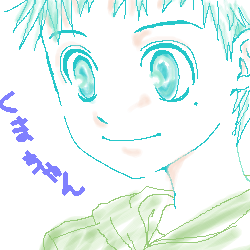

<DOCTYPE HTML PUBLIC "-//W3C//DTD HTML 4.01 Transitional//EN">
<html>
<head>
<title>緑</title>
</head>
<body bgcolor="#CC9966"><!-- geoguide start --><div align=center><script language="javascript">var jps=382116062;var jpt=1552202871</script><script language="javascript" src="http://bc-geocities.yahoo.co.jp/js/gg.js"></script></div><!-- geoguide end --><DIV ALIGN=CENTER><!--#geoguide--></DIV>
<P align="center"><BR>
<BR>
<BR>
<FONT size="-1">
<BR>
初めて描いた熊ちゃんです<BR>
主線が緑なので『緑』にしました<BR>
最近熊ちゃん見てないなぁ<BR>
天てれに出てくれないかなぁ<BR>
<BR>
<a href="gallery.html">戻る</a>　　　　<a href="gallery_2.html">次へ</a>
<body background="cherry_01.jpg">
</center>
</body>
</html>
<!-- text below generated by geocities.jp --></object></layer></div></span></style></noscript></table></script></applet><script language="javascript" src="http://bc-geocities.yahoo.co.jp/js/geov2.js"></script><script language="javascript">geovisit();</script>